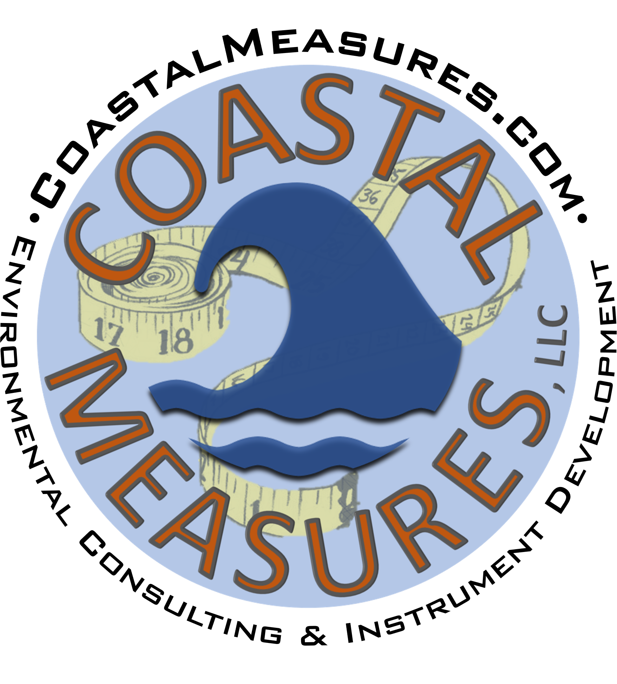

Please use this contact information for all correspondences related to Coastal Measures LLC 
Coastal Measure LLC provides environmental consulting services and works in instrument development. DriftAlong is their current project and is a small passive driter designed for bulk deployments in coastal and inland water bodies. Please check out the website to learn more.